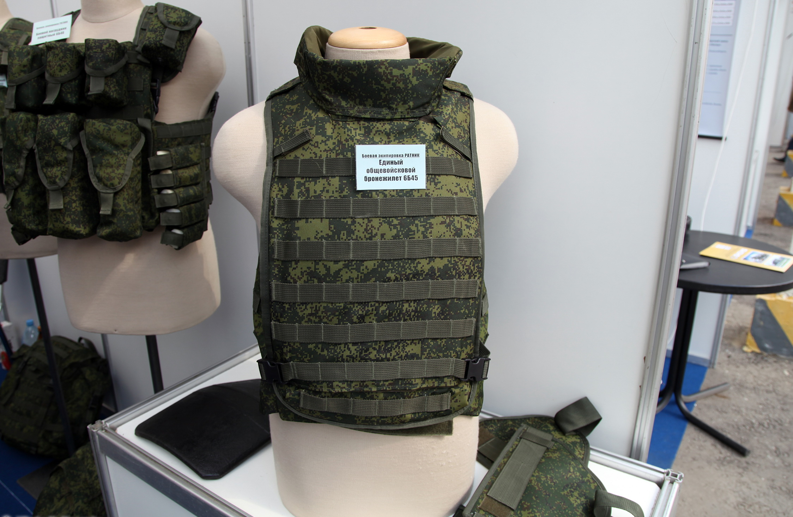

ID 23 — Указ императора Николая II о мобилизации
Описание: Указ о всеобщей мобилизации, подписанный Николаем II в июле 1914 года. Исторический документ, предопределивший вступление России в Первую мировую войну.
ID 19 — Утро в сосновом бору

Описание: Одна из самых известных картин русской живописи, изображающая лесной пейзаж с медвежатами. Символ гармонии природы и художественного мастерства.
ID 24 — Шашка драгунская обр. 1881 года
Описание: Драгунская шашка образца 1881 года с клеймами Тульского оружейного завода. Использовалась кавалерией Российской империи. Отличается простотой и надежностью конструкции.
ID 20 — Вышитый рушник "Весна"
Описание: Ритуальный рушник, украшенный традиционной орнаментской вышивкой, символизирующей весеннее обновление и благополучие семьи.
ID 21 — Бронежилет 6Б45

Описание: Армейский бронежилет серии "Ратник", применявшийся на Донецком направлении в ходе СВО. Предназначен для защиты от стрелкового оружия и осколков. На экспонате видны следы использования.
ID 22 — Военный пропуск военнослужащего
Описание: Документ, предоставляющий право прохода через блокпосты и контролируемые территории в зоне проведения СВО. Имеет штамп воинской части, подпись офицера, следы складок от ношения в кармане.